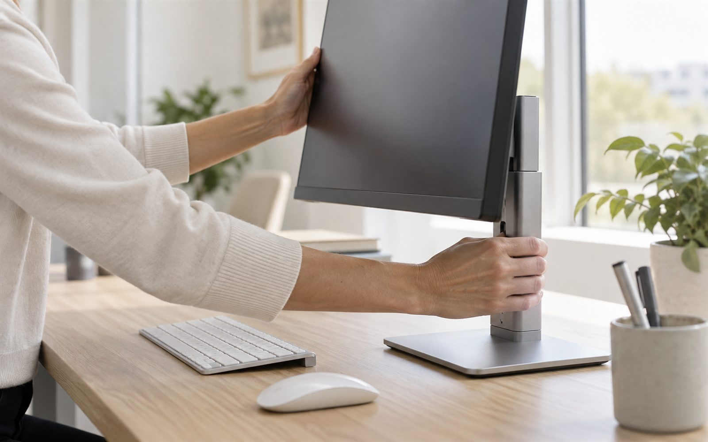
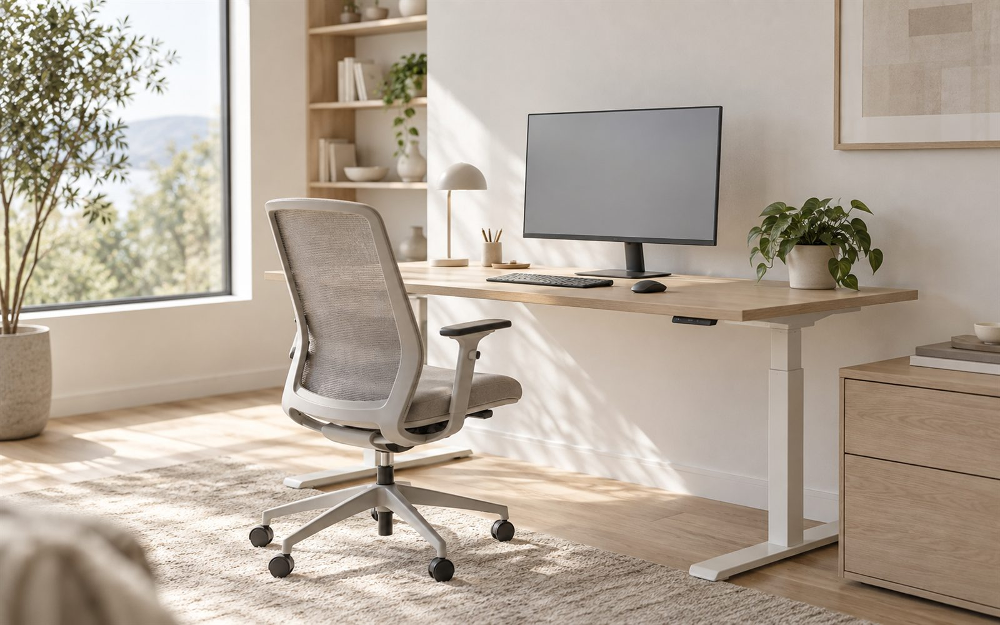

Сначала человек, а не мебель
Рабочее место должно подстраиваться под человека, его тело и задачи, а не человек – под мебель.
Если вас «скрючивает», вероятно, это адаптация под неправильно настроенное рабочее место.
Для компаний и для себя. В офисе и на производстве.
Сначала – человек, его тело и рабочая задача.
Затем – рабочая поза, мебель, оборудование, микроклимат и освещение.

Система построена не вокруг списка «правильных» поз и настроек.
Сначала человек понимает, как тело распределяет нагрузку, почему возникает мышечное напряжение и как оно адаптируется к рабочей задаче.
Тогда рекомендации перестают быть набором инструкций: становится понятно, почему именно такое положение тела подходит для конкретной работы и зачем именно так настраивать рабочее место.

Для тех, кто хочет не просто следовать рекомендациям, а понимать их логику и уметь самостоятельно принимать правильные решения.


Рабочее место должно подстраиваться под человека, его тело и задачи, а не человек – под мебель.
Если вас «скрючивает», вероятно, это адаптация под неправильно настроенное рабочее место.
Положение тела зависит от задачи.
Важно найти сбалансированное положение без лишнего мышечного напряжения.
Кресло, стол, монитор, клавиатура, мышь, освещение и другие элементы работают вместе.
Один неправильно настроенный элемент может заставлять тело постоянно компенсировать и снижать пользу остальных настроек.
При правильной настройке рабочего места сбалансированное положение тела сохраняется привычно и естественно, без необходимости постоянно напоминать себе «сидеть правильно».
Мы начинаем не с выбора мебели, а с понимания того, как работает тело. И уже затем под выбранное положение тела адаптируем рабочее место и условия работы.
Для собственников, руководителей, HR и специалистов, отвечающих за здоровье сотрудников, условия труда и обучение – как в офисе, так и на производстве.
Подробнее 02Для тех, кто много работает за компьютером – в офисе, дома или в смешанном формате – и хочет сохранить здоровье, меньше уставать и поддерживать высокую работоспособность.
ПодробнееДля компаний, которые разрабатывают и выпускают мебель, оборудование и аксессуары для рабочих мест и хотят учитывать эргономику уже на этапе создания продукта.
Для специалистов и организаций, работающих в области эргономики, здоровья, обучения и организации рабочих пространств, которым интересны совместные проекты и профессиональное сотрудничество.

Врач-остеопат, эксперт в области офисной и промышленной эргономики, автор собственной системы эргономики.
Проекты по обучению эргономике для российских и международных компаний.
 Citibank
Citibank Deloitte
Deloitte Ford
Ford Sanofi
Sanofi Kraft Foods
Kraft Foods РОСНАНО
РОСНАНО Интер РАО
Интер РАО Газпром переработка
Газпром переработкаПонять, как работает тело во время работы: как распределяется нагрузка, почему возникает мышечное напряжение и как рабочая поза влияет на утомление и работоспособность.
Найти сбалансированное положение тела – комфортное, без постоянного мышечного напряжения и подходящее под конкретные задачи и стиль работы.
Адаптировать кресло, стол, монитор, клавиатуру, мышь и другие элементы рабочего места под выбранное положение тела, а также учесть освещение и микроклимат.
Практические материалы о рабочей позе, здоровье, работоспособности и организации рабочего места.
Правильная рабочая поза не должна требовать постоянного мышечного контроля. Разбираемся, как найти сбалансированное положение тела и настроить под него рабочее место.

Даже дорогое эргономичное кресло не решит проблему, если монитор, стол, клавиатура и другие элементы рабочего места заставляют тело постоянно адаптироваться.
Боль и усталость часто связаны не с одним фактором, а с тем, как организовано рабочее место в целом. Разбираем, что стоит проверить в первую очередь.
Короткая подпись: в какой срок перезвонят.
Короткая подпись: что произойдёт после отправки и в какой срок ответят.